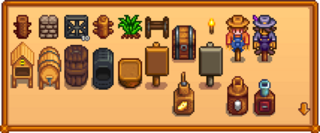
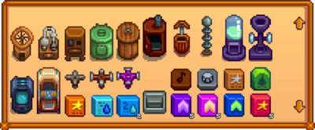
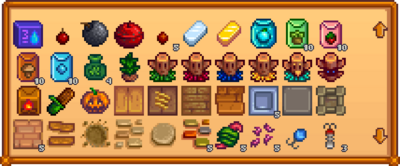
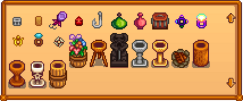
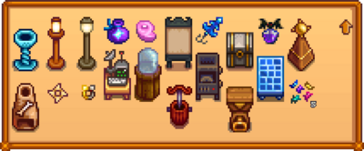

Template:CraftingRecipes
| Article Stub
This article is marked as a stub for the following reason:
|



Note that the Wedding Ring shown below is available only in Multiplayer games.


Description
This template displays all crafting recipes.
Use
{{CraftingRecipes}}